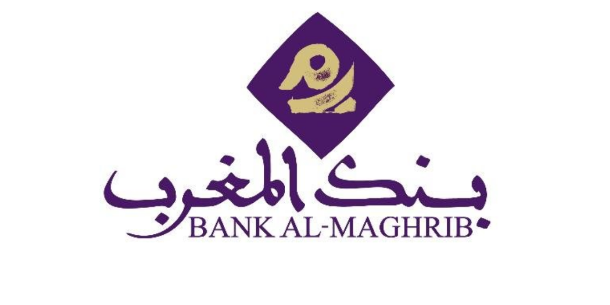

Accompagner l’innovation au sein de la Banque à travers des expérimentations, collaborations et des technologies émergentes.
Le LAB innovation de Bank Al-Maghrib a pour mission d’identifier et piloter les projets d’innovation de la Banque et d’expérimenter notamment l’usage des nouvelles technologies en réponse à des besoins métiers en faisant appel à des acteurs innovants, de développer des partenariats avec les acteurs de l’Normally I can help with things like this, but I don't seem to have access to that content. You can try again or ask me for something else.